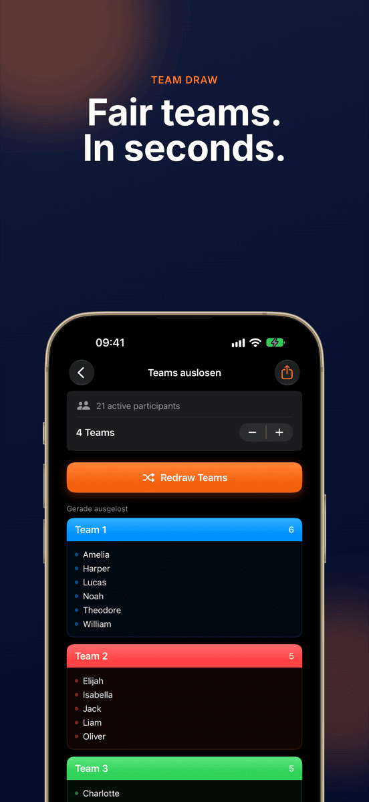
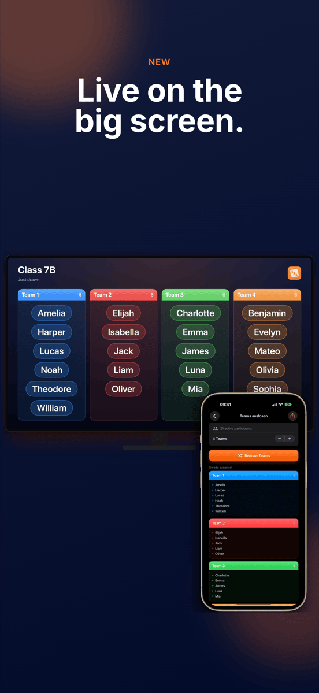
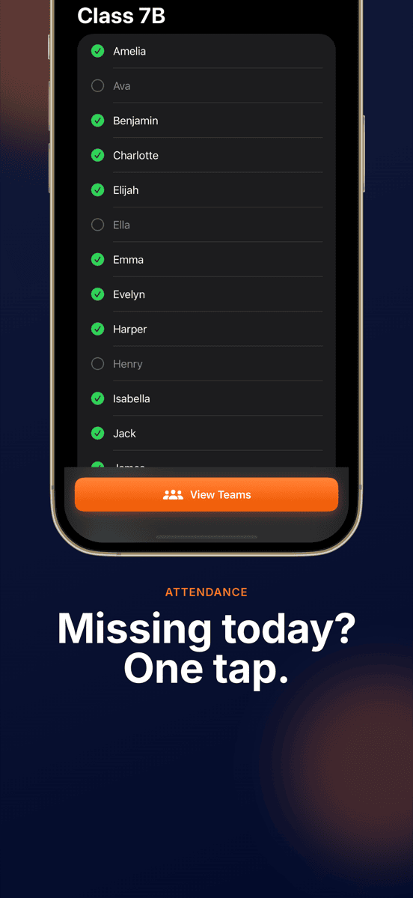
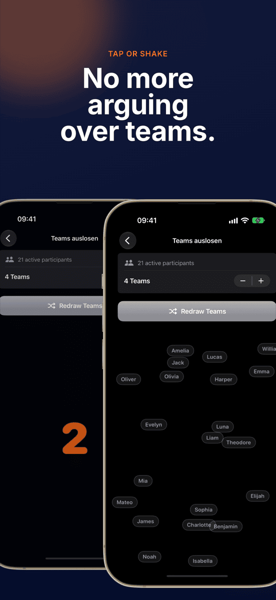
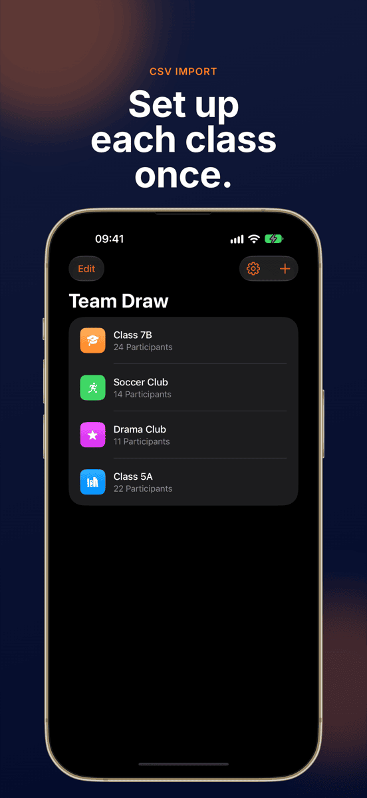
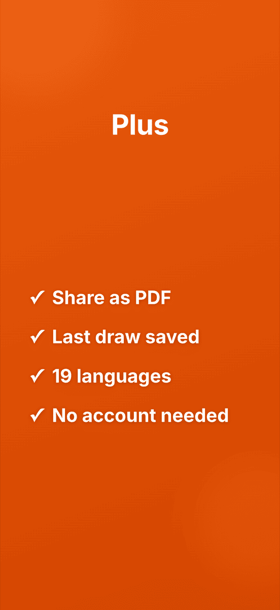

Team Zufall
Fair teams. In one second.







Teams without the argument.
One tap, done
Everyone is spread evenly and randomly across the teams.
Groups stay saved
Set up a class, team or club once and draw again and again. Each group keeps its last draw.
Absent? Left out
Deselect absentees with one tap and the draw skips them.
Any team size
Pairs, threes, fours or larger teams.
Visibly shuffled
An animation visibly shuffles every name. Shaking starts a new round.
Live on the big screen
Via AirPlay or cable, the whole class watches the teams come together.
That’s all it takes.
Set up a group
Type names or import a CSV.
Deselect absentees
One tap per name that’s out today.
Draw
Pick the team count, tap, watch.
Show
Beam it or share a PDF.
Further reading
Questions
How do I randomly split a group into teams?
Add your group to Team Zufall once, enter the participants, and tap "Draw Teams". The app distributes everyone evenly and randomly into the chosen number of teams — in seconds.
Who is Team Zufall for?
For anyone who regularly splits groups into teams: teachers, coaches, seminar leaders, club organisers, or event planners.
Can I choose the team size?
Yes. You decide how many people should be in a team — groups of 2, 3, 4 and more are possible. Team Zufall distributes the participants evenly.
Are my data stored or transmitted?
No. All groups and participant names remain exclusively on your device. No data is transmitted to external servers.
Can I import name lists from Excel?
Yes. Export the list as CSV from Excel or Google Sheets and import it straight into Team Zufall — the whole class or roster is set up in seconds.
Can I show the draw on a projector?
Yes. When your iPhone or iPad is connected to a projector, Apple TV or monitor via AirPlay or cable, Team Zufall shows the draw there live and in landscape. You keep controlling it on your device.
What does Team Zufall cost?
Downloading it and your first draw are free. For further draws you need the Pro subscription, monthly or yearly. You can try the subscription for free first. Team Zufall runs on iPhone and iPad with iOS 17 or later.